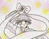
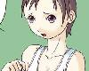
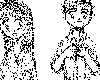

| ART | CREATOR | THUMBNAIL | RECOMMEND | TEXTS BY | |
| #1 | 月下転生 | 角さん |
記念すべき１号作品は角さんからでした。 | 角さん, 八重洲二世, 真城悠さん |
|
| #2 | まほ〜のRIBBON! | 角さん |
 |
魔法のリボンでメタモルフォーゼ！ いけいけGO!GO! ジャ〜ンプ！ …というのもありました。 | 八重洲二世, 真城悠さん, MONDOさん, ゴールドアームさん |
| #3 | 何で俺が… | みっしんぐ さん |
「何で俺が、セーラー服を…」と恥じらってしまう女の子がプリティです。 | 真城悠さん, 広尾翔さん, ことぶきひかるさん, KAZEさん (99/09/13) |
|
| #4 | 華森蘭丸くん | みかん飴 さん |
 |
独自の画風が人気のみかん飴さんの(初)作品でした。２枚目のイラストではなんか蘭丸クン、すっかり女子の制服に馴染んでますね。（笑） | Kさん, Kさん, 真城悠さん, 真沙美さん, 奈落さん (99/12/03) |
| #5 | やられた… | ソルトレイク さん |
その後のメイドさん大行進の嚆矢となった作品ですね。 | 真城悠さん | |
| #6 | そして、ふたりは… | ことぶきひかる さん |
 |
お馴染み、ことぶきひかるさんによるモノクロ鉛筆画風イラストです。明確に「入れ替わり」を意識して描かれた作品ですね。 | 真城悠さん, 水谷秋夫さん (00/05/08) |
| #7 | ないしょの恭平くん | MONDO さん |
これは凝った作品ですね。「恭平から恭子への転換はわずか０．０１秒で完了する。でわ、そのプロセスをもう一度見てみよう！」なんちゃって。 | Kさん, 真城悠さん | |
| #8 | ロッカールームのエトランゼ | みかん飴 さん |
薄暗いロッカールーム（控え室？）にたたずむ可憐な美少女がひとり…。なにやら妖しいシチュエーションです。 | 真城悠さん, 真沙美さん (99/09/28) |
|
| #9 | 絵日記 | 角さん |
いつも実験的な手法に挑戦して下さる角さんの作品。今回は、上の絵と下の絵のギャップが面白いです。おねえちゃん（元おにいちゃん？）の表情がなんかいいです。 | 猫野丸太丸さん, 真城悠さん, MOTOさん (99/09/23) |
|
| #10 | 強襲!! ピンクハウス | ことぶきひかる さん |
フリフリの象徴ピンクハウスと少女の表情のギャップが面白いです。関係ないけど、一瞬「超獣ベロクロン」を思い出しました。（笑） | MOTOさん, 真城悠さん, KAZEさん, 水谷秋夫さん (00.04.10) |
|
| ART | CREATOR | THUMBNAIL | RECOMMEND | TEXTS BY | |